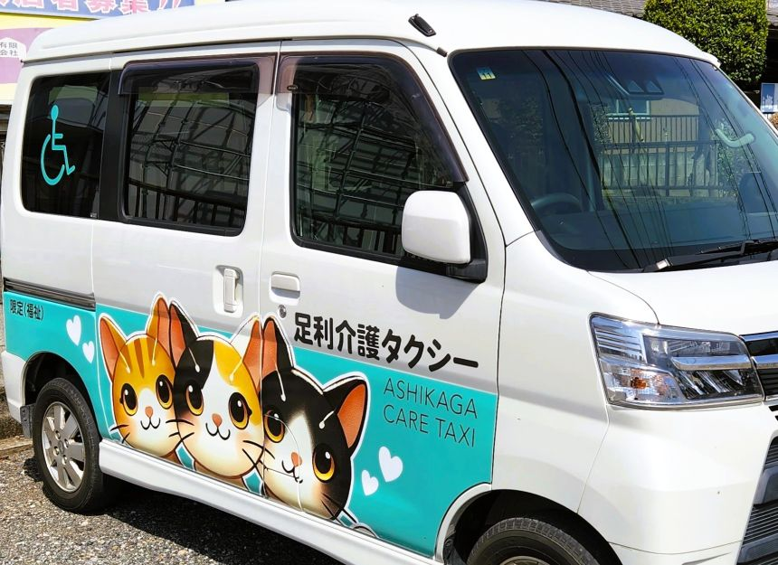

介護施設勤務15年半の女性ドライバーが丁寧に対応

こんなお悩みありませんか？
- 近距離利用なので一般のタクシーや他の介護タクシーは予約できなかった・・
- 病院内の介助もお願いしたい・・
- 買い物や旅行、ペットの通院でも利用したい・・
- 通勤で毎日利用したいが介護タクシーは高額になるイメージが・・
- 急に体調が悪くなることもある・・
キャンセル料が高かったらどうしよう・・
ご利用頂ける方
- 車いすが必要な方。
- 身体障害者手帳をお持ちの方。
（介護保険は使えません。） - ご病気やケガ等で一般タクシー利用が難しい方。
- 生活保護受給中の方
（ケースワーカーの許可が必要）
お住まい（出発地）又は行き先（病院等）の
どちらか又は両方が栃木県の方に限ります。
介護福祉士という国家資格をもつ女性ドライバーが、ご家族の代わりに病院内の介助も可能ですので、安心してご利用頂けます。
時間制の料金システムなので、距離制（一般タクシー）に比べてこんな方におススメです。
- 病院等の待ち時間が長い。（往復利用）
- 利用距離が短い。
- 一度に複数個所に寄りたい方（通院～薬局～買い物～役所等）
- 重度の身体障害等で乗降に時間のかかる方
通勤で利用して頂いている方もいらっしゃいます。
介護タクシーは高いと思っても、ぜひ一度お見積りをご依頼ください。
近距離でも、お買い物でもご旅行でも、喜んでお伺い致します。